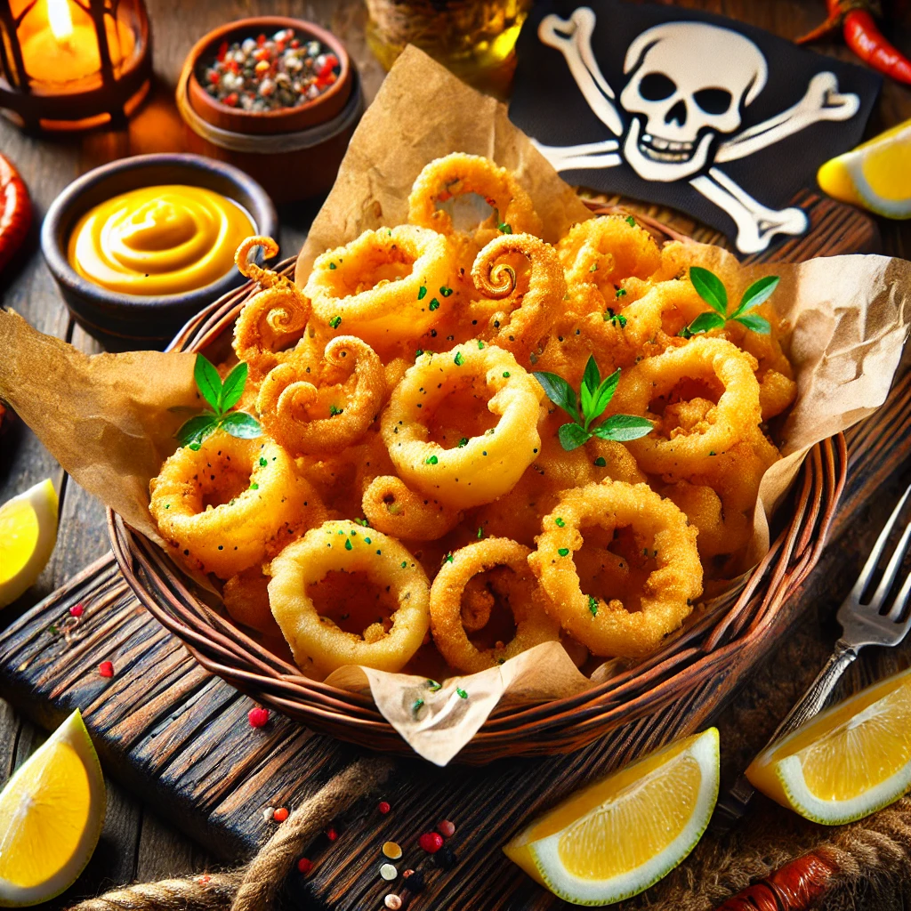

THE BUSTY MERMAID

Captain’s Castaway Calamari
Ingredienser og Oppskrift:
Velkommen til Captain’s Castaway Calamari – en sjømatrett som er like sprø som en pirats latter og like uimotståelig som en skattkiste på en øde øy! Denne retten kombinerer fersk blekksprut med en krydret og sprø panering, og er perfekt for de som ønsker å smake på havets skatter, uten å måtte kjempe mot sjømonstre.
Så, hva inneholder denne fristelsen? Her er oppskriften på en skattejakt i en rett:
- 500g **fersk blekksprut** (fisket fra de dypeste hav, som piratenes skjulte skatter)
- 1 kopp **hvetemel** (for den sprø paneringen, som pirater elsker å kaste på sine fiender)
- 1 ts **paprikapulver** (for å gi retten et hint av varme, som en tropisk storm)
- 1 ts **hvitløkspulver** (som den krydrede vinden som alltid er nærme et piratskip)
- 1 ts **tørket oregano** (for en smak som minner om sjøens friske duft)
- 1 kopp **lunken olje** (til å steke blekkspruten til gull, som den beste piraten hadde gjort med sine skatter)
Hvordan lage denne retten:
- Rens blekkspruten godt og skjær den i små ringer.
- Bland hvetemelet med paprika, hvitløkspulver, og oregano i en stor bolle.
- Dypp blekksprutringene i melblandingen til de er godt dekket.
- Varm opp oljen i en stekepanne og stek blekksprutringene til de er sprø og gyldne.
- Server de sprø blekksprutene med en saftig dipp og skål for å smake på havets beste skatter!
OBS: Denne retten er kjent for å få deg til å føle deg som en ekte pirat som har oppdaget en ny skatt – vær forberedt på å begynne å rope "Arrr!"